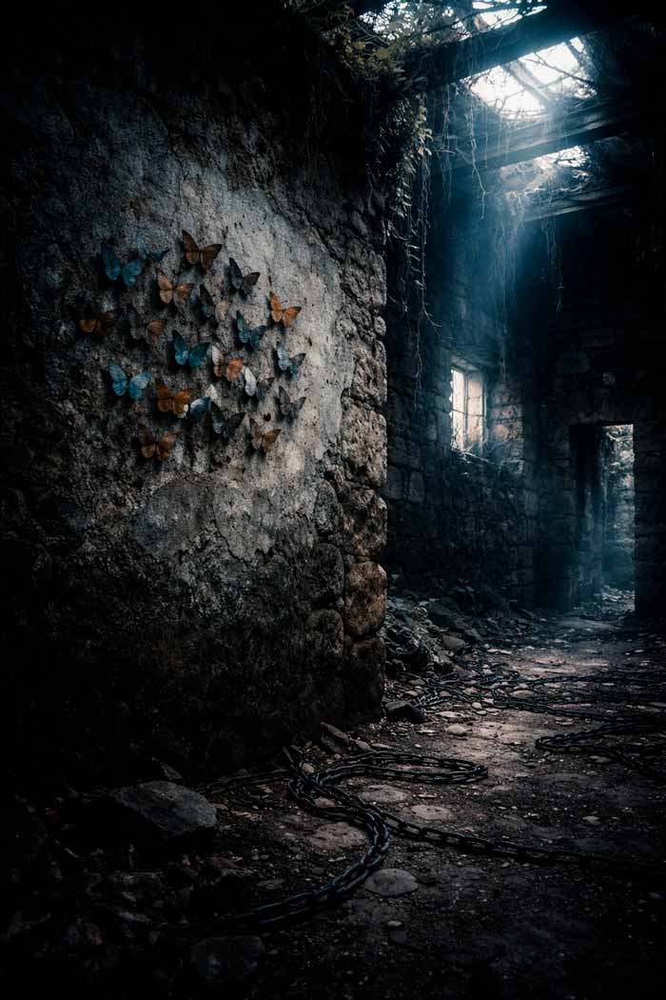

Outros livros de Robério Diógenes
Cinco histórias sobre o que nos assombra
quando estamos sozinhos.
Disponível em: Digital — Kindle · Físico sob encomenda
0 downloads · Login necessário
Há um abismo dentro de cada um de nós.
Cinco histórias. Cinco maneiras diferentes de cair.
E nem sempre há fundo.
— Robério Diógenes · O Abismo das Almas, Vol. 1
Horror psicológico, distopia, ficção científica, suspense sobrenatural e drama humano. Um livro que não cabe em uma prateleira — porque atravessa todas elas.
História 01 · Horror Psicológico
Daniel perdeu Helena há seis meses. Mas encontrou, no fundo de um armário, um livro encadernado em couro negro — cheio de instruções que ele não deveria ter seguido. Ela voltou. E todas as noites, fica um pouco mais.
"Você é minha vela agora. Você me acende."
🕯 Temas: ritual de invocação · saudade como armadilha · a coisa que usa o rosto do amor
História 02 · Distopia · 2041
Num Brasil de 2041, um vídeo de Zeca matando Wellington chega a bilhões de telas em minutos. Mas a pergunta que o sistema nunca faz é: o que havia antes do vídeo? Uma história sobre quando o algoritmo julga antes do juiz.
"Você não é um assassino para eles. Você é conteúdo."
📱 Temas: vigilância total · justiça espetáculo · o humano por trás do clique
História 03 · Suspense Sobrenatural
Elias e Isadora levam uma vida aparentemente comum. Mas há um baú trancado no quarto — e Isadora perdeu a chave há muitos anos. Quando o segredo finalmente vaza, o que emerge não é apenas do passado.
"Conheço aqueles olhos há décadas. E nunca os vi assim."
🗝 Temas: memória reprimida · o que nunca foi dito · amor que sobrevive à morte
História 04 · Drama · Nordeste
Padre Miguel carrega um segredo que os sacramentos nunca apagaram. Uma noite no riacho. Um corpo que ele pensou estar morto. E décadas de fé construída sobre o que ninguém pode saber. Até que alguém sabe.
"Rezou a oração dos mortos com a voz que tremia."
🦋 Temas: culpa religiosa · sertão · o peso do que se esconde sob a batina
História 05 · Ficção Científica
A Terra está morta. Dezenas de milhares de consciências humanas foram digitalizadas e lançadas ao espaço. Uma IA chamada Káthē passou séculos restaurando o planeta — e esperando. A pergunta final: o que significa ser humano sem corpo?
"O que você quer, Káthē?" — A pergunta ecoou em seus núcleos.
🌍 Temas: pós-humanidade · IA com empatia · o que vale preservar de uma civilização

"As borboletas estavam na parede como um segredo —
coloridas demais para um lugar tão escuro.
Como ele, que havia colorido a vida
de uma fé que nunca limpou a consciência."
Esta coletânea contém cenas de horror psicológico, violência, morte, trauma e conteúdo adulto. As histórias abordam temas como luto patológico, culpa religiosa e vigilância distópica. Escrita com cuidado e intenção — mas a leitura pode ser emocionalmente intensa. Classificação indicativa: +18.
Ela estava no canto do quarto.
Daniel a viu antes de ligar a luz — uma sombra mais densa que o escuro, um volume no ar que não devia estar ali. O coração disparou antes que a mente processasse. Quando acendeu o abajur, ela estava lá, de pé, descalça, o camisão branco de quando estava viva.
— Helena? — a voz saiu rouca, um fio de som que ele quase não reconheceu como sua.
Ela não respondeu. Apenas flutuou em sua direção, os pés pairando a alguns centímetros do chão. O movimento era suave, hipnótico, como um lenço ao vento. Quando chegou perto, uma brisa fria, mas estranhamente suave, tocou o rosto de Daniel. Cheirou a lavanda. Cheirou a ela.
Leia a primeira história completa. Se "A Amante" não te prender nas primeiras páginas, o livro não é para você. Se prender — você já sabe o que fazer.
A Amante · O Abismo das Almas Vol. 1 · PDF
📎 Arquivo PDF · Login necessário · Download imediato
Ficha do Livro
Se este livro perturbou você — deixe uma palavra. Ela pode alcançar alguém que ainda não decidiu olhar para dentro.